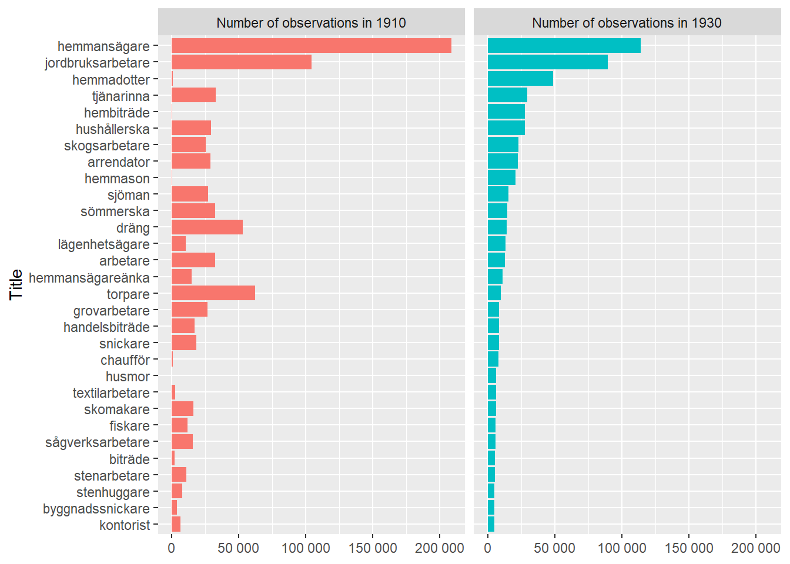
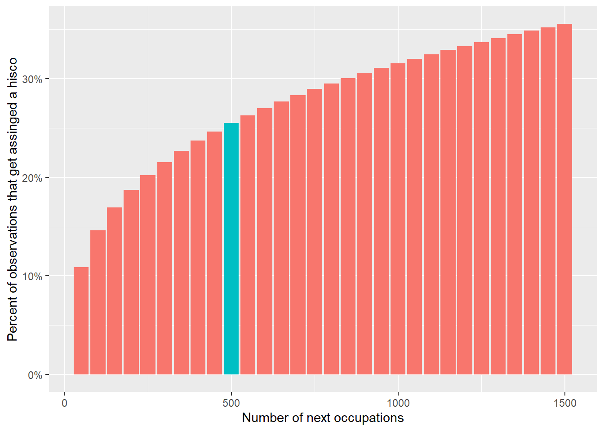

Untitled
Purpose
How many of the occupational titles in 1930 can be read across for Hisco codes directly from 1910?
Starting point
We start with the 1910 titles and occupational hisco classifications.
20,232 observations have a string that is classified as 99999.
Some of these should be reclassified surely?
| Most common occupations classified as unknown | |
| Occupational hisco code 99999 | |
| yrke | n |
|---|---|
| understödstagare | 22 934 |
| inhyseshjon | 11 988 |
| lägenhetsägare | 9 884 |
| fattighjon | 9 410 |
| änka | 8 393 |
| understödstagerska | 8 390 |
| inhyses | 8 262 |
| undantagshjon | 8 121 |
| studerande | 6 460 |
| husägare | 5 165 |
Anyhow, let’s go on for the moment. We can return to this.
In the 1930 census
How many distinct occupational titles are there now that we have tidied them up?
So we have 58 051 distinct titles, which comprises 1 160 317 individuals of the total 2 198 182 observations.
How many distinct titles are there in the 1910 census?
There are 54 847 distinct titles in the 1910 census.
How many overlap?
We want to lookup the occupational hisco for the 1930 census from the 1910 census.
So we can match exactly the titles from 1910 to 1930.
So there are 12 916 distinct occupations in common between the two sources after joining them together.
We can have a look at the most common ones below:

What proportion do these 12 916 make up of the 1930 census?
So 1 072 036 of the 1930 observations then have a hisco code.
As a percentage of the total non-missing titles in the 1930 census this is 92%.
What remains?
How many people in the 1930 census have a non-missing occupation but still do not have an occupational hisco?
So 88 281 observations remain without any occupational hisco, with 45 135 different titles.
What are the most common titles in the 1930 census that still lack a classification?
| Most common occupations still without classification | |
| In 1930 census | |
| yrke | n_1930 |
|---|---|
| konfektionssömmerska | 747 |
| bilreparatör | 548 |
| hushåll | 349 |
| jordbruksarbetare skogsarbetare | 338 |
| nomadlapp | 325 |
| jordbruksarbete | 321 |
| hembiträde hemmadotter | 316 |
| jordbruksarbetare åt fadern | 284 |
| jordbrukardräng | 279 |
| skogsarbetare jordbruksarbetare | 256 |
| hemmadotter hembiträde | 252 |
| textilarbetare vävare | 250 |
| bilmontör | 247 |
| textilarbetare väv | 245 |
| hushållshjälp | 237 |
| lägenhetsägare jordbruksarbetare | 234 |
| skogsarbetare flottningsarbetare | 212 |
| arbetslös | 198 |
| ackumulatorarbetare | 193 |
| varubud | 185 |
So there are two main types of titles: new jobs (e.g. bilreparatör) and multiple occupations e.g. (jordbruksarbetare skogsarbetare).
If we wanted to do this manually, how would long would it take?
If we do the first 500 titles by hand, we can get to 25 percent of the missing values. The next 44 635 make up 75 percent, but maybe it’s fine just to leave them out.
